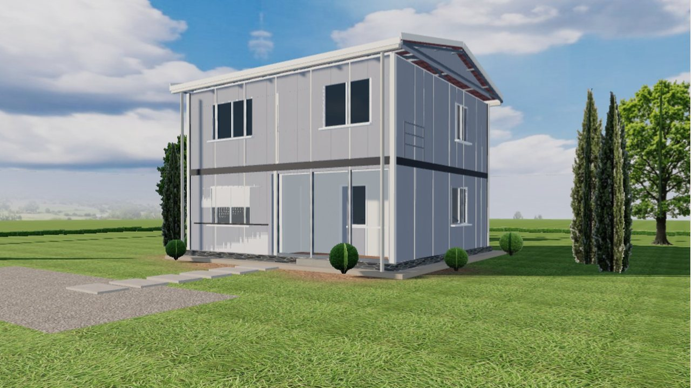
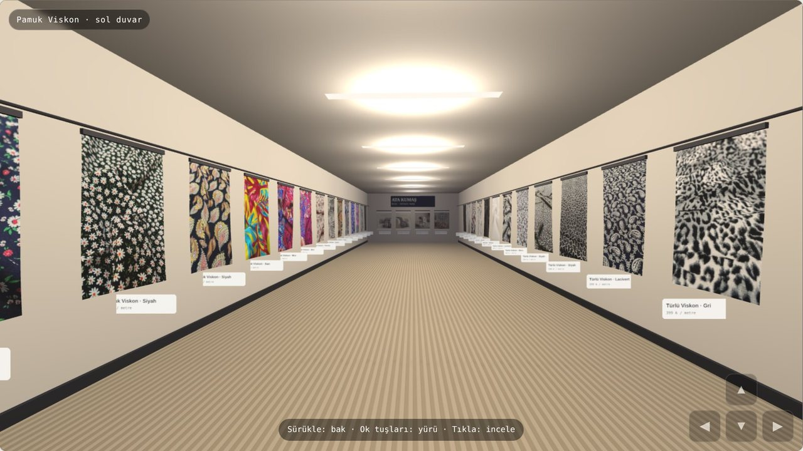

Müşteri mağazanızı, showroom'unuzu ya da henüz bitmemiş projenizi telefonundan geziyor; kapıdan girer gibi. Yayında iki işimiz var, tıklayıp deneyebilirsiniz.
Fotoğraf galerisi mekânı anlatmıyor: ölçek yok, yön yok, 'şu köşede ne var' sorusu cevapsız. Bitmemiş projede ise gösterecek fotoğraf hiç yok. Satış ekibi her müşteriyi mekâna çağırmak zorunda kalıyor; gelmeyen müşteri rakibe gidiyor. 360° fotoğraf turları da çoğu zaman bir kez çekilip unutuluyor — ürün değişince tur eskiyor.
Mekân bitmişse 360° kamerayla çekiyoruz; bitmemişse ya da ürün odaklıysa 3B olarak modelliyoruz. Kumaş mağazasında duvardaki her kumaş gerçek fotoğrafıyla asılı; prefabrik evde her oda gerçek plandan ölçülü.
Ziyaretçi sürükleyerek bakıyor, ok tuşlarıyla ya da ekrandaki düğmelerle yürüyor, zemine tıklayıp oraya gidiyor. Telefonda dokunmatik, bilgisayarda klavye — ikisi de test edilmiş.
Duvardaki kumaşa tıklayınca ürün sayfası açılıyor; evde odaya girince ölçü yerde okunuyor. Tur bir gösteri değil, satış sayfasının kendisi.
Ürün listesi değişince tur yeniden kuruluyor; kumaş mağazasında yeni ürün panelden eklendiğinde duvara kendiliğinden asılıyor. Yeniden çekim yok.
İkisi de canlı; tıklayıp içinde gezebilirsiniz. Telefonda da çalışıyor.

CanlıPrefabrik ev üreticisi · SakaryaFirmanın 40 modelinin ölçülü kat planı tarayıcıda eve dönüşüyor. Ziyaretçi kat, oda düzeni, cephe, çatı ve terası seçiyor; evin içinde yürüyor, gece görünümüne geçiyor. Yanında seçime en yakın model ve liste fiyatı.
İşi incele →
CanlıKumaş toptancısı · BursaTrendyol kataloğu siteye taşındı; müşteri mağazanın içinde geziyor, kumaşı kadın ve erkek mankenin üzerinde görüyor. Satış, stok ve maliyet paneli; depodan Telegram'a atılan fotoğraf onayla ürün oluyor.
İşi incele →Aktaş Prefabrik'in 3B ev tasarlayıcısında ziyaretçi kat planından kurulan evin içinde yürüyor, oda ölçülerini okuyor, gece görünümüne geçiyor. Ata Kumaş'ın sanal mağazasında 27 kumaş gerçek dokusuyla duvarda; tıklayınca ürün açılıyor, seçilen kumaş 3B mankenin üzerinde görülüyor. İkisi de tarayıcıda çalışıyor, uygulama indirilmiyor.
Turun yavaş açılması müşteriyi kaybettirir; bu yüzden sayfa önce açılıyor, 3B sahne ziyaretçi istediğinde yükleniyor, dokular ihtiyaç oldukça geliyor. Eski telefonda ya da WebGL olmayan tarayıcıda sahne yerine düz galeri gösteriliyor; kimse boş ekran görmüyor. Teslimden önce mobil hız ölçümünü ve farklı cihazlarda açılış kaydını size gösteriyoruz.
Mekânın planı ya da ölçüleri, ürün listesi ve ürün fotoğrafları. Bitmiş mekân için çekim günü; 81 ilde çözüm ortağımızla çekiyoruz, model ve kurgu Bursa'da yapılıyor.
Fiyat mekânın büyüklüğüne ve ürün sayısına göre değişiyor; 360° çekim ve 3B model için ayrı rakam yazıyoruz. Aralıkların tamamı fiyat sayfasında; işi anlattığınız gün net bir aralık veriyoruz.
Turun yanında genellikle istenenler: Sanal showroom · İnşaat 3D modelleme · Emlak ve kurumsal tanıtım · Web sitesi tasarımı. Genel anlatım Web Sitesi Tasarımı sayfasında.
Mekân bitmişse ve sık değişmiyorsa 360° çekim hızlı ve ucuz. Ürün sık değişiyorsa, mekân henüz yoksa ya da ziyaretçinin ürüne tıklayıp satın almasını istiyorsanız 3B model. İlk görüşmede ikisinin de maliyetini yazıyoruz.
Evet. Tur tek bir sayfa ya da bölüm olarak var olan sitenize giriyor; WordPress dahil. Siteniz yoksa tanıtım sitesiyle birlikte kuruyoruz.
Çalışıyor; yayındaki iki örneği telefonunuzdan açıp deneyebilirsiniz. Dokunmatik kontroller ayrı tasarlandı, sahne telefonun gücüne göre sadeleşiyor.
Turun kendisini değil, sayfasını görüyor. Bu yüzden tur sayfasını başlık, açıklama, ürün listesi ve yapılandırılmış veriyle kuruyoruz; tur içindeki ürünler ayrı sayfalarda da yaşıyor.
Bitmiş mekânın 360° turu çekimden sonra bir hafta. 3B tur mekânın büyüklüğüne göre iki–dört hafta; kumaş mağazası kataloğuyla birlikte üç haftada açıldı.
İletişim
Mekânın planını ya da ürün listenizi yazın; hangi turun uygun olduğunu aynı gün söyleyelim.